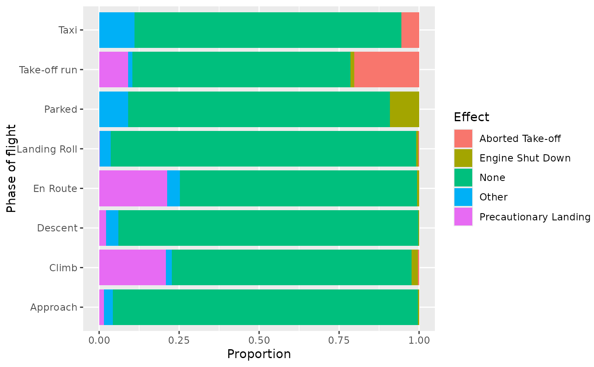

A collection of all collisions between aircraft in wildlife that were reported to the US Federal Aviation Administration between 1990 and 1997, with details on the circumstances of the collision.
Format
A data frame with 19302 observations on the following 17 variables.
- opid
Three letter identification code for the operator (carrier) of the aircraft.
- operator
Name of the aircraft operator.
- atype
Make and model of aircraft.
- remarks
Verbal remarks regarding the collision.
- phase_of_flt
Phase of the flight during which the collision occurred:
Approach,Climb,Descent,En Route,Landing Roll,Parked,Take-off run,Taxi.- ac_mass
Mass of the aircraft classified as 2250 kg or less (1), 2251-5700 kg (2), 5701-27000 kg (3), 27001-272000 kg (4), above 272000 kg (5).
- num_engs
Number of engines on the aircraft.
- date
Date of the collision (MM/DD/YYYY).
- time_of_day
Light conditions:
Dawn,Day,Dusk,Night.- state
Two letter abbreviation of the US state in which the collision occurred.
- height
Feet above ground level.
- speed
Knots (indicated air speed).
- effect
Effect on flight:
Aborted Take-off,Engine Shut Down,None,Other,Precautionary Landing.- sky
Type of cloud cover, if any:
No Cloud,Overcast,Some Cloud.- species
Common name for bird or other wildlife.
- birds_seen
Number of birds/wildlife seen by pilot:
1,2-10,11-100,Over 100.- birds_struck
Number of birds/wildlife struck:
0,1,2-10,11-100,Over 100.
Source
Aircraft Wildlife Strike Data: Search Tool - FAA Wildlife Strike Database. Available at https://datahub.transportation.gov/Aviation/Aircraft-Wildlife-Strike-Data-Search-Tool-FAA-Wild/jhay-dgxy. Retrieval date: Feb 4, 2012.
Details
The FAA National Wildlife Strike Database contains strike reports that are voluntarily reported to the FAA by pilots, airlines, airports and others. Current research indicates that only about 20\ Wildlife strike reporting is not uniform as some organizations have more robust voluntary reporting procedures. Because of variations in reporting, users are cautioned that the comparisons between individual airports or airlines may be misleading.
Examples
library(dplyr)
library(ggplot2)
library(forcats)
library(tidyr)
# Phase of the flight during which the collision occurred, tabular
birds |>
count(phase_of_flt, sort = TRUE)
#> # A tibble: 9 × 2
#> phase_of_flt n
#> <fct> <int>
#> 1 Approach 6470
#> 2 Take-off run 3506
#> 3 Climb 3222
#> 4 Landing Roll 3047
#> 5 NA 1783
#> 6 Descent 599
#> 7 En Route 585
#> 8 Taxi 79
#> 9 Parked 11
# Phase of the flight during which the collision occurred, barplot
ggplot(birds, aes(y = fct_infreq(phase_of_flt))) +
geom_bar() +
labs(x = "Phase of flight")
# Height summary statistics
summary(birds$height)
#> Min. 1st Qu. Median Mean 3rd Qu. Max. NA's
#> 0.0 0.0 40.0 754.7 500.0 32500.0 3193
# Phase of flight vs. effect of crash
birds |>
drop_na(phase_of_flt, effect) |>
ggplot(aes(y = phase_of_flt, fill = effect)) +
geom_bar(position = "fill") +
labs(x = "Proportion", y = "Phase of flight", fill = "Effect")
